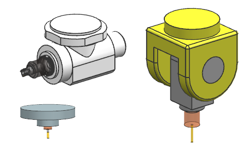

Device library enhancements
What is it?
-
Milling heads are added to the device library. You can mount tool heads to your machine tool model statically, or dynamically during simulation.
-
Milling heads are supported for collision checking in simulations.
-
The Retrieve Devices from Library button is also available in the Create Tool dialog box.

Why should I use it?
You can access devices directly from the Create Tool dialog box. In previous releases, you could access the device library only by editing the machine in the Machine Tool view of the Operation Navigator.
Where do I find it?
|
Application |
Manufacturing |
|
Toolbar |
Insert→Create Tool |
|
Menu |
Insert→Tool |
|
Location in dialog box |
Library group→Retrieve Devices from Library →Library Class Selection dialog box→Head node. |